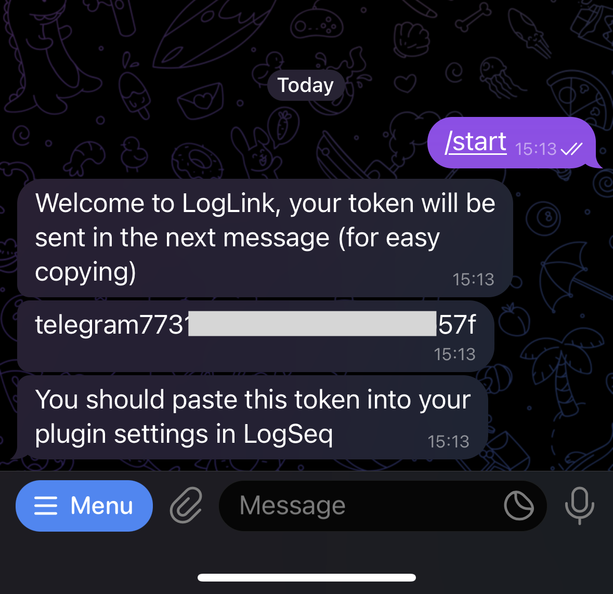
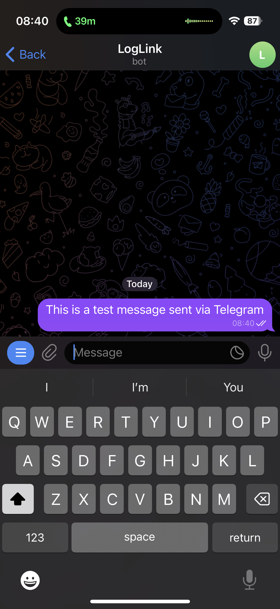
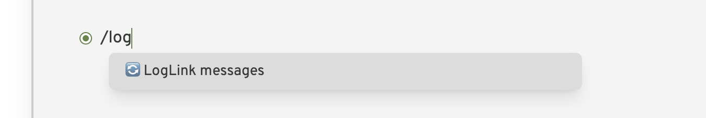
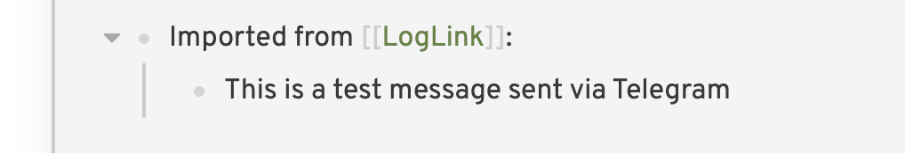

Telegram Quickstart
Telegram is the preferred client to use for LogLink. It has a slick bot interface and does not charge usage costs for the server.
Step 1: Understand the risks
Danger zone
Before you do anything you should read and understand the important security notice - LogLink is not suitable for everyone!
Step 2: Download Telegram and create an account
Download Telegram and install it on your phone.
Step 3: Find the LogLink bot
or open Telegram and search for the LogLink bot:

Step 4: Start the bot
Message the bot with the following command:
Step 5: Get the token
You will receive a token from the bot, which will look something like telegram11223344aabbccddee11.
Your token is secret
This token allows access to any future messages you send to the bot. Do not share it with anyone.
If you believe your token is compromised then you should refresh it.
You can copy this token by pressing and holding on the message.

Step 6: Download and configure the LogLink or Obsidian plugin
Follow the instructions here to download and configure the LogLink plugin
Step 7: Send messages to the bot via Telegram
Send a test message to the bot via Telegram:

Then go to LogSeq and insert the result into your graph using the slash command /loglink:

It will download the message and insert it into your graph:

Step 8: Set up imgBB to allow images
If you want to send images to LogLink then you will need to follow an additional step here